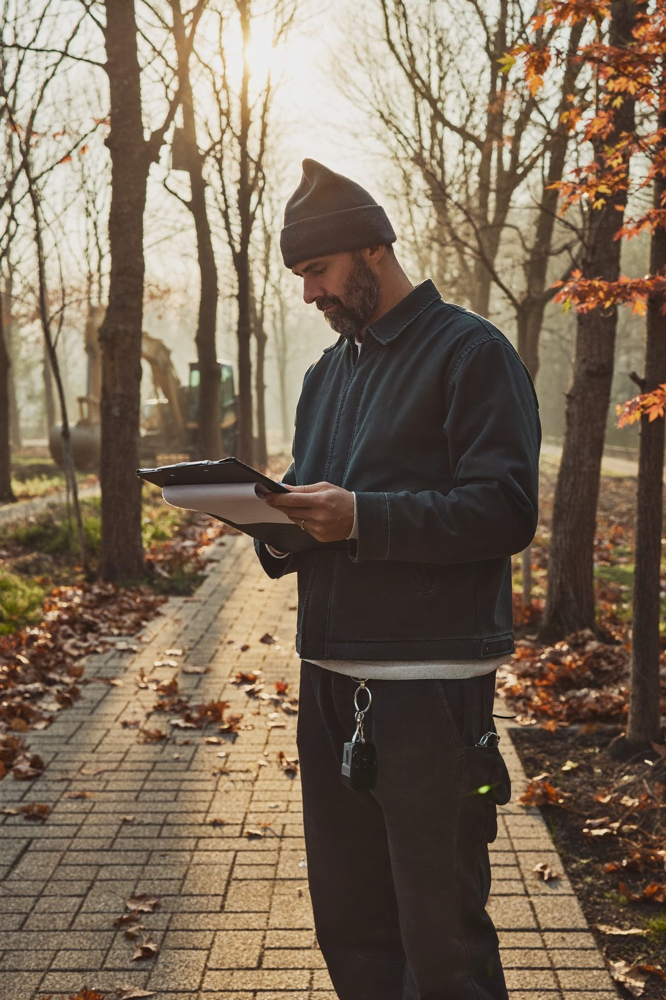

Warum GaLaBau-Betriebe ihre besten Fachkräfte zwischen Oktober und Januar gewinnen – und was bis zum 31. Dezember passieren muss.
Jedes Jahr dasselbe Muster: Von Dezember auf Januar steigt die Arbeitslosigkeit in Deutschland um mehr als 170.000 Menschen – und die Zahl der Bewerbungen um ein Viertel. Beides hängt mit der Winterpause zusammen, beides baut sich im vierten Quartal auf. Wer das Muster kennt, stellt zum Saisonstart ein. Wer es nicht kennt, sucht bis in den Sommer.
Im GreenCareers-Netzwerk zeigt sich seit Jahren das gleiche Bild: Die Wochen um den Jahreswechsel gehören zu den bewerbungsstärksten des Jahres – während in der Hochsaison kaum ein Landschaftsgärtner, Vorarbeiter oder Bauleiter den Betrieb wechselt. Auf den nächsten beiden Seiten stehen die vier Mechanismen dahinter, die Rückwärtsrechnung bis zum Saisonstart 2027 und der Fahrplan für Oktober, November und Dezember.